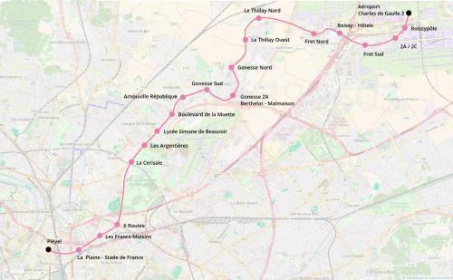

M17 Pleyel - Roissy
M17 Pleyel - Roissy
Saint-Denis-Pleyel - Aéroport CDG 3
Création de la ligne 17 du métro.
La ligne 17 du métro est un projet de nouvelle ligne de métro envisagée dansle cadre du projet Grand Paris Express pour desservir le secteur de la Plaine de France (Stains, Garges, Arnouville et Gonesse) en les reliant à Saint-Denis au sud et l'aéroport de Roissy au nord.
Carte

Le tracé de la ligne proposé par le plan Ile-de-France.
Cliquer pour agrandir
Stations
Si ce projet vous intéresse n'hésitez pas à le (re-)partagez sur les réseaux sociaux ou par courriel ou à en parler autour de vous.
Si vous souhaitez travailler à la concrétisation de ce projet, passez à l'action et contactez nous.
Commenter